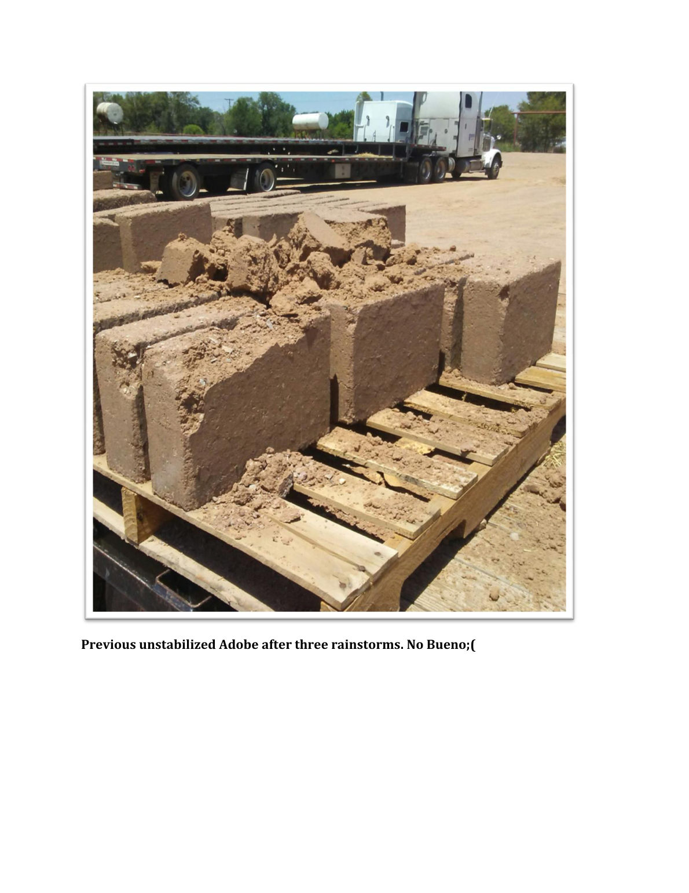
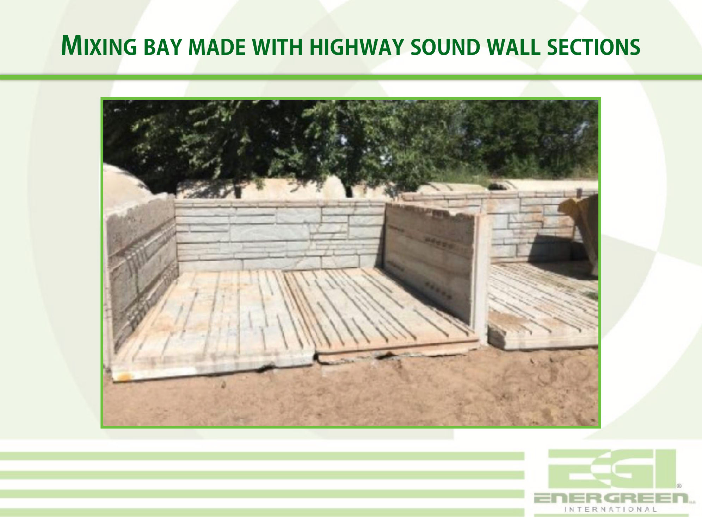
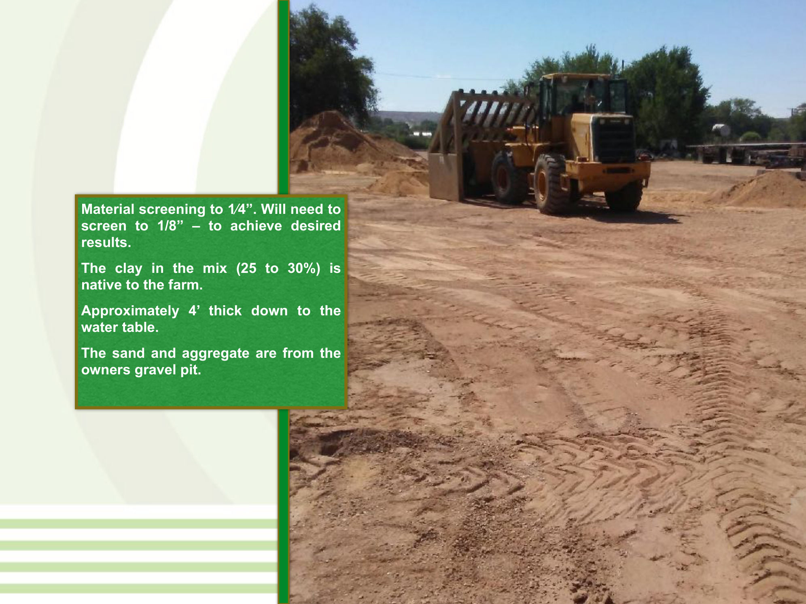
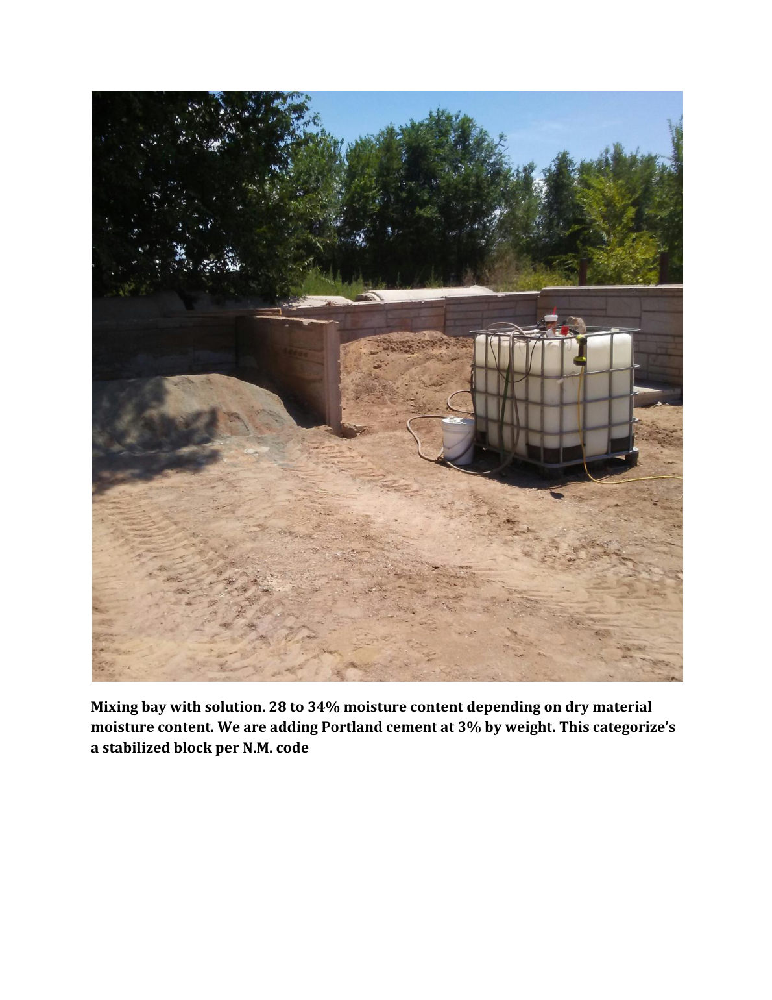
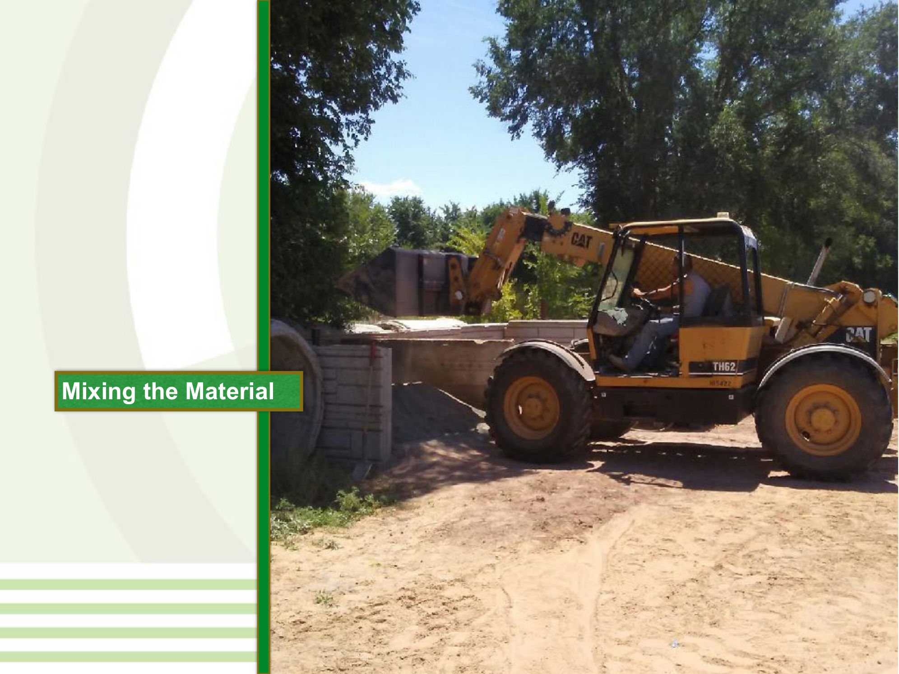
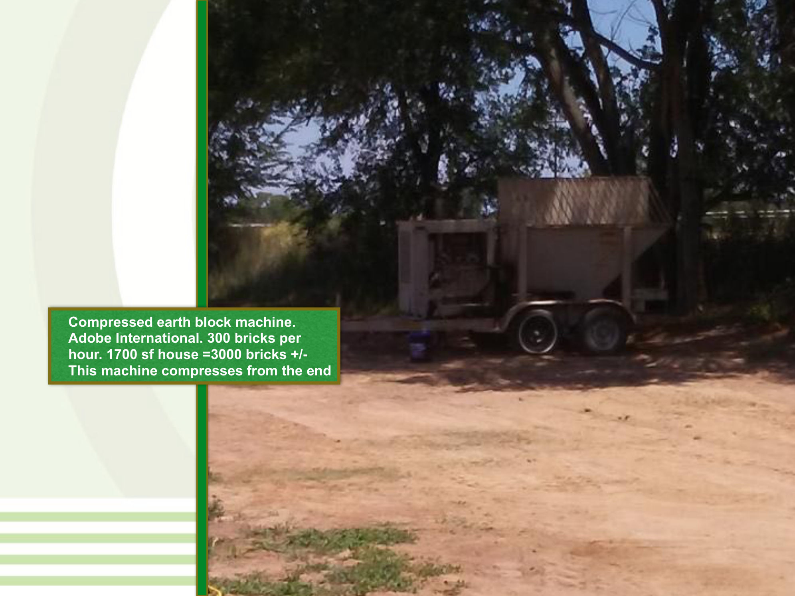
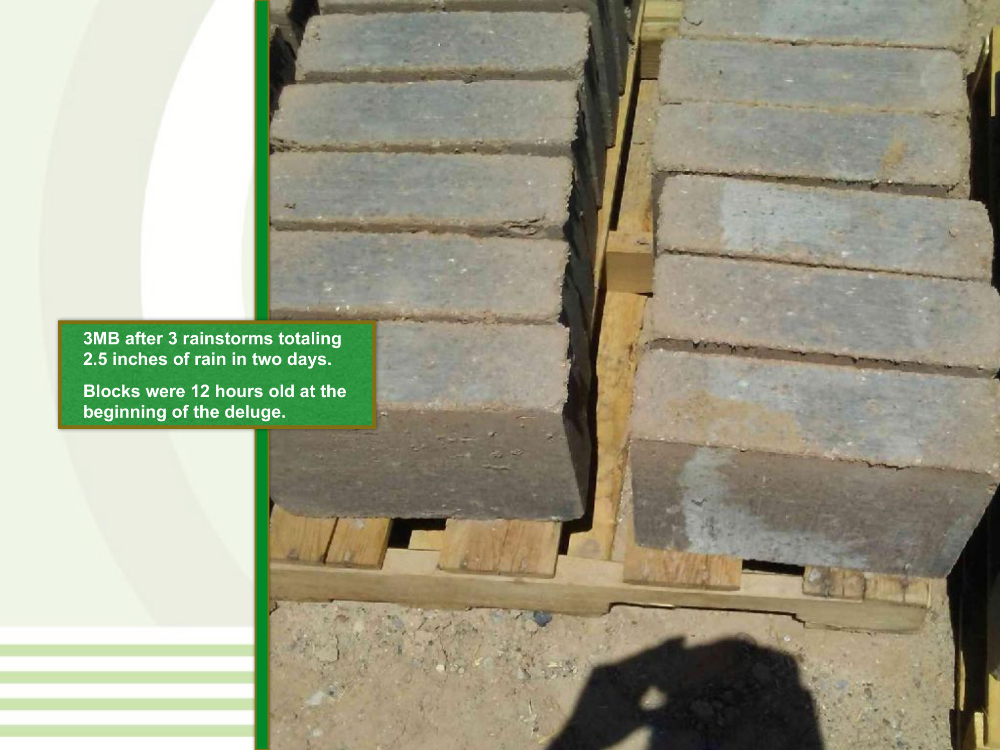
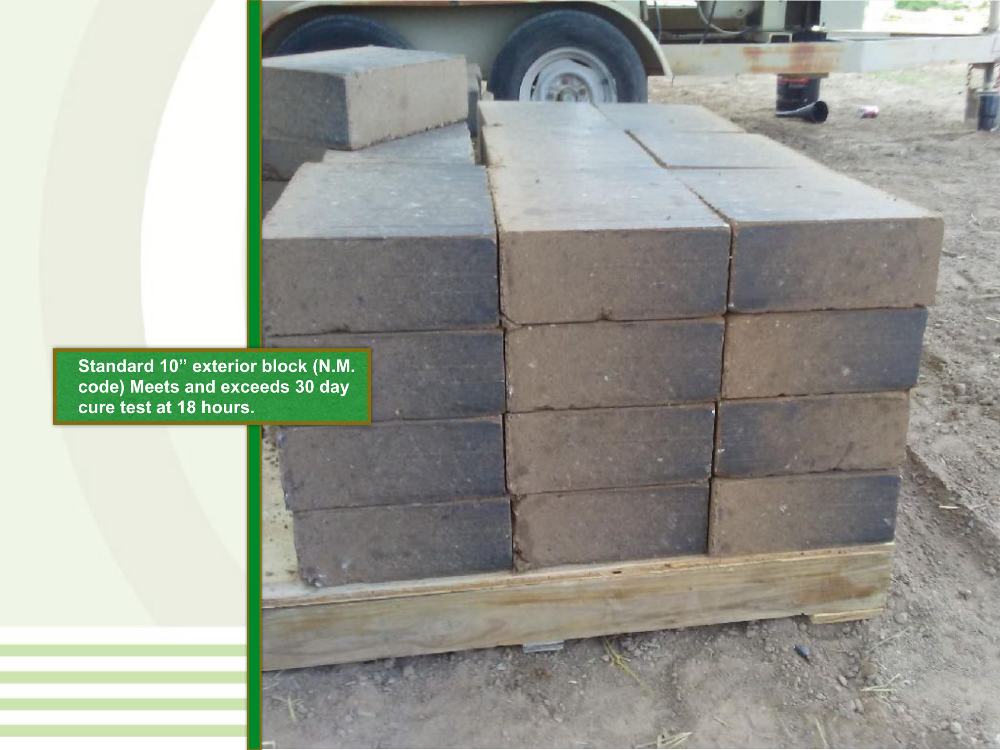
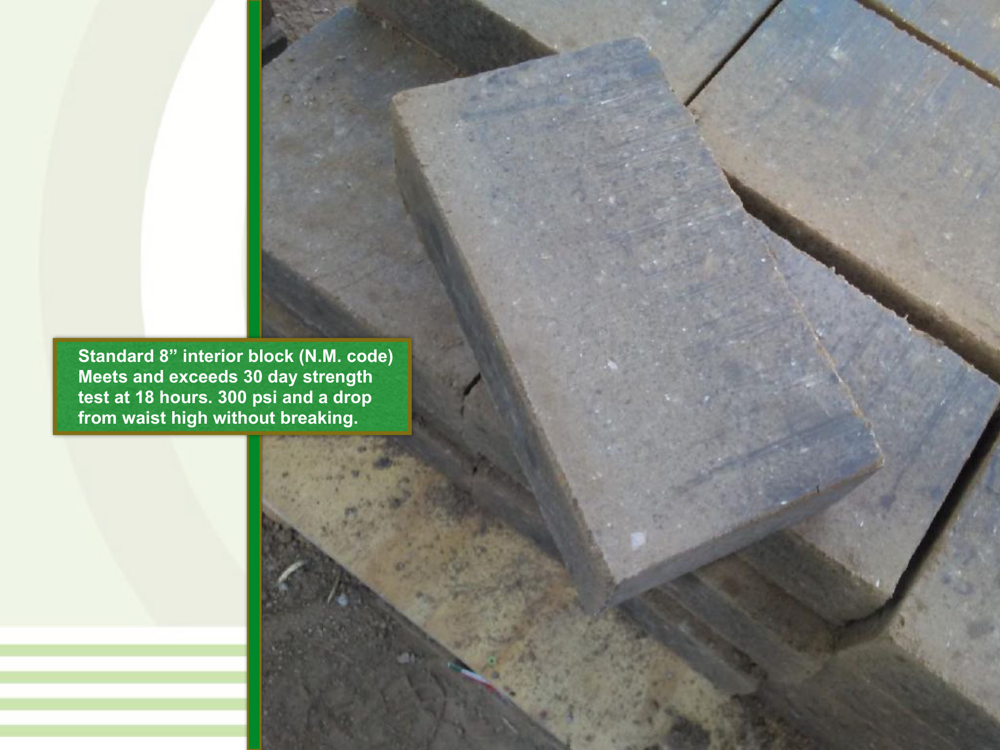
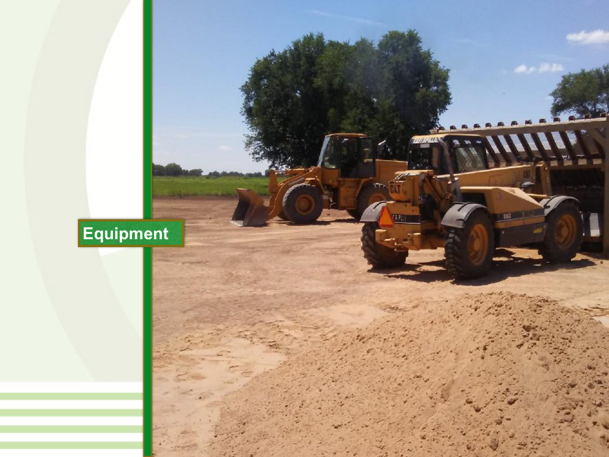

A farm brick-making operation pressed compressed-earth blocks from its own clay and sand, bound with the product solution plus 3% Portland cement. A previous unstabilized batch had crumbled in the rain. The stabilized batch, twelve hours old, took three rainstorms and 2.5 inches of rain in two days and came through with sharp edges.
The trial exists because of a failure. A previous batch of unstabilized adobe blocks had been left out through three rainstorms, and the field write-up's own caption tells the result: "Previous unstabilized Adobe after three rainstorms. No Bueno."

Everything came from the property: clay native to the farm (25–30% of the mix, from a deposit about four feet thick), sand and aggregate from the owner's own gravel pit, screened to 1/4". A mixing bay was improvised from salvaged highway sound-wall sections. The mix was wetted with the product solution to 28–34% moisture and pressed in an Adobe International compressed-earth-block machine rated at 300 bricks an hour, a 1,700 sq ft house needs about 3,000 bricks.





The stabilized blocks were twelve hours out of the press when the weather arrived: three rainstorms totaling 2.5 inches of rain in two days. The blocks came through intact, edges sharp. Per the write-up, the standard 10" exterior block met the 30-day cure standard at 18 hours, and the 8" interior block met the 30-day strength standard at 18 hours: 300 psi, surviving a drop from waist height without breaking.



